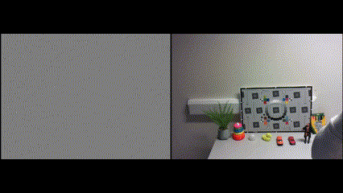

Sensor Rig

Event (Neuromorphic) Sensor
Neuromorphic sensors, also known as event cameras or silicon retinas, are a bio-inspired sensing technology
that differs significantly from traditional frame-based cameras [17]. Instead of capturing images at a fixed
rate, like RGB cameras, event cameras asynchronously measure per-pixel brightness change in a scene. They
output a stream of events, where each event encodes the time, location (pixel coordinate) and sign (increase
or decrease) of the brightness change. This event-driven approach marks a paradigm shift in how visual
information is acquired [17].
Components
-
Silicon-based-sensor: Similar to RGB image sensors, event camera sensors are typically made of silicon and
operate on the visible light and NIR spectrum.
-
Photoreceptor: Each pixel contains a photoreceptor that converts incoming light into a photocurrent. Event
cameras often utilize photoreceptors that operate on a logarithmic scale, which is a key factor contributing
to their high dynamic range. The front-end photoreceptor circuits have a finite bandwidth and can filter out
rapid variations in incoming light intensity if they occur too quickly.
-
Change detection circuitry: Within each pixel, there is circuitry that memorizes the log intensity each time
an event is sent. This circuitry continuously monitors for a sufficient change from this memorized value.
When a change in log intensity reaches a temporal constant threshold, an event is triggered. This circuitry
includes a comparator to detect when the brightness change exceeds the threshold. The contrast sensitivity
is determined by pixel bias currents.
-
Event encoding circuitry: Once a brightness change exceeds the threshold, circuitry within the pixel encodes
the location (x, y), time(t), and polarity(p) of the event. The polarity indicates whether the brightness
increased (‘ON’, +1) or decreased (‘OFF’, -1). The output of the event cameras is a variable data-rate
sequence of these digital events or spikes.
-
Readout mechanism: The generated events are transmitted from the pixel array to the periphery and then out of
the camera using a shared digital output bus. This often employs an address-event representation (AER)
readout, which allows for efficient transmission of sparse event data. Readout rates can range from 2MHz to
1200MHz [17], depending on the specific chip and type of hardware interface.
Pipeline
How it all comes together to detect events or motion in a scene:
-
Continuous brightness monitoring: In contrast to standard frame-based cameras that capture entire images at a
fixed rate, each pixel in an event camera independently and continuously monitors the log intensity
(brightness) of the incoming light. Each pixel memorizes the log intensity each time it sends an event and
constantly looks for a sufficient change from this memorized value. This is a key difference from traditional
cameras that sample the entire scene synchronously at a fixed frame rate.
-
Event generation based on threshold: When the change in brightness (log intensity) at a pixel, since the last
event occurred at that pixel, exceeds a predefined temporal contrast threshold, the pixel triggers an
“event”. This event signifies a significant change in the light intensity at that specific location. The
polarity indicates the sign of the brightness change.
-
Asynchronous output: Because each pixel operates independently, the events are generated and transmitted
asynchronously. There is no global exposure time or frame capture involved. As soon as a brightness change
threshold is crossed at a pixel, an event is generated and can be transmitted with sub-millisecond latency.
-
Event encoding: Each generated event is typically represented by a tuple containing:
-
X,Y: the spatial location (pixel coordinates) of the pixel where the brightness change occurred.
-
T: the timestamp of when the event occurred, usually with microsecond resolution.
-
P: the polarity of the brightness change, indicating whether the brightness increased or decreased.
-
Data driven sensing: The output of an event camera is inherently data-driven. Events are only generated when
there is motion or a change in brightness in the scene. In static scenes, the event rate is very low, as
there are minimal brightness changes to trigger events. Conversely, the faster the motion or the more events
dynamic the scene, the more events are generated per second. This allows the sensor to adapt its ‘sampling
rate’ to the dynamics of the scene.
Difference from traditional cameras
Some of the key differences between event cameras and traditional frame-based cameras:
-
Frame-less vs frame-based: Unlike RGB cameras that capture full images (frames) at a fixed rate, event
cameras are frame–less. They do not have a concept of a global exposure time or a fixed frame rate. Instead,
they only output information (events) when changes in brightness occur at individual pixels. This
asynchronous operation means that in a static scene, an event camera produces very little data, contrasting
with the constant data stream of frame-based cameras.
-
Brightness change vs absolute intensity: Event cameras directly measure per-pixel changes in brightness
(log intensity). Each event signifies a change of a predefined magnitude. In contrast, traditional cameras
measure the absolute intensity of light that falls on each pixel over a given exposure time. Event cameras,
therefore, provide information about the dynamics of the scene, where traditional cameras capture a snapshot
of the scenes appearance at discrete time intervals.
-
Asynchronous vs synchronous: The operation of event cameras is asynchronous at the pixel level. Each pixel
operates independently, monitoring brightness changes and triggering events as soon as a sufficient change is
detected. This is in direct contrast with the synchronous capture of frames in traditional cameras, where all
pixels are exposed and read out (either globally or row-by-row) based on a fixed clock. The asynchronous
nature allows event cameras to have a very high temporal resolution and low latency.
The event-driven nature of these cameras, inspired by biological vision, provides several advantages:
-
High temporal resolution: Event cameras can capture very fast motions without motion blur due to their
microsecond-level temporal resolution.
-
High dynamic range: they offer a significantly higher dynamic range (around 140 dB) compared to traditional
cameras (around 60 dB), allowing them to operate effectively in scenes with extreme lighting variations.
-
Low power consumption: Because they only process and transmit data when changes occur, event cameras
typically have lower power consumption, especially in static or slowly changing scenes.

These advantages make event cameras particularly suitable for applications where detecting rapid changes and
operating in challenging lightning conditions are crucial, such as high-speed robotics, surveillance and HDR
imaging. However, processing their unconventional output requires novel algorithms that differ from those used
for traditional frame-based image data.